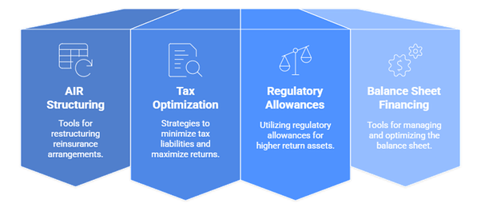
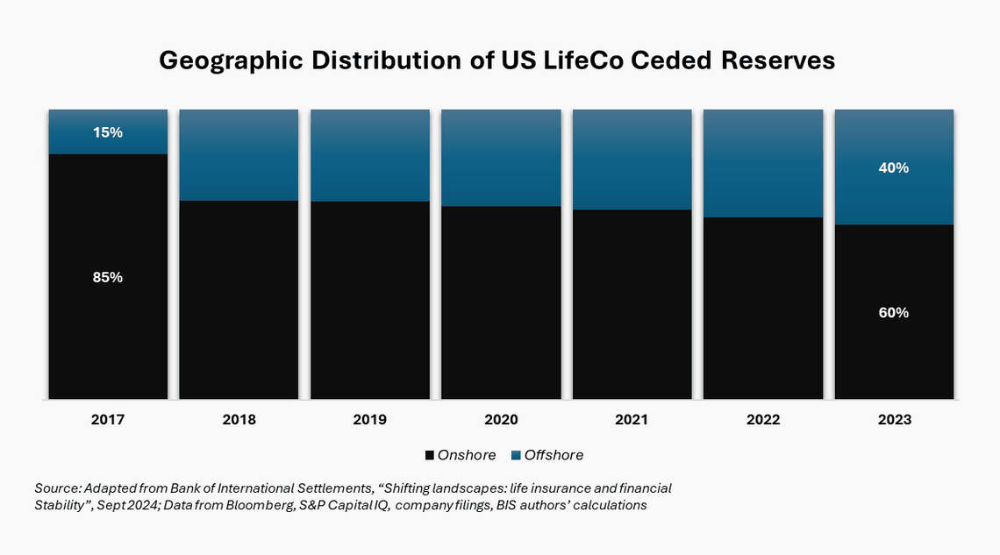
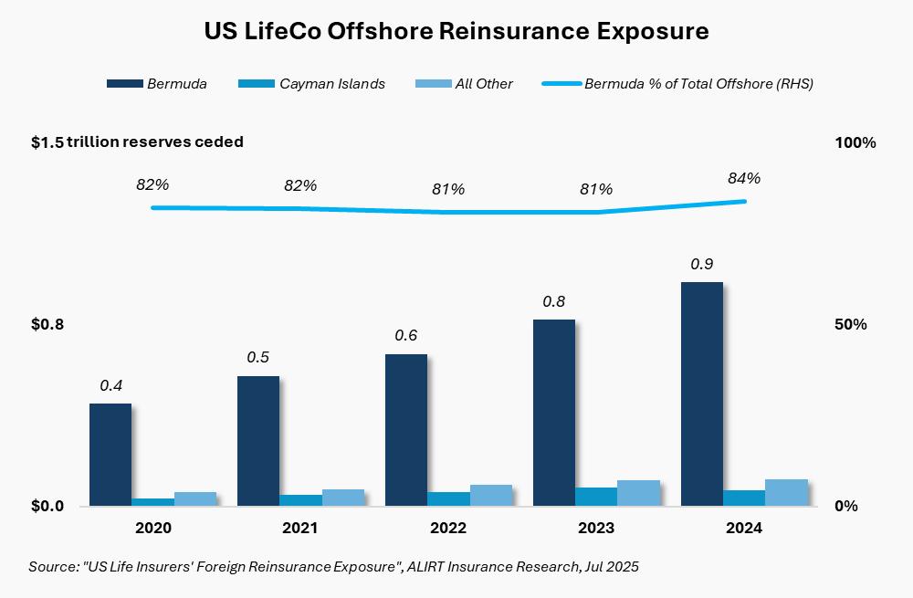
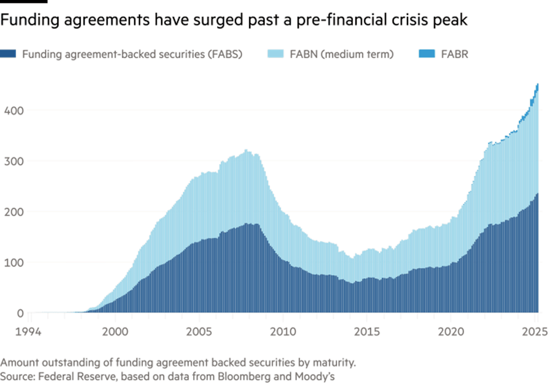
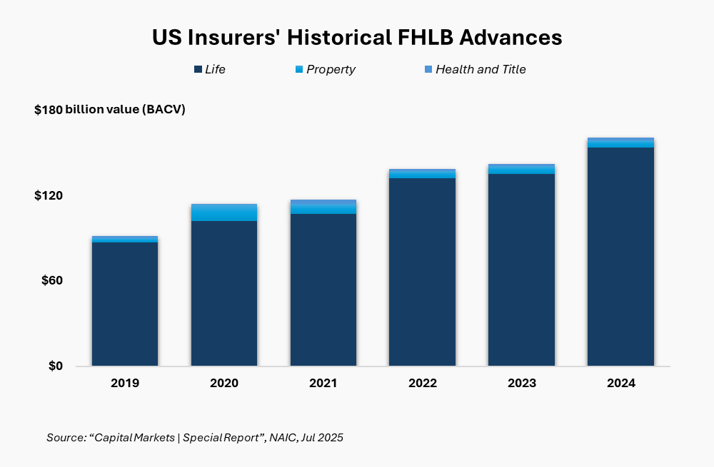

The Insurance Capital Capacity Engine: the Cylinders that Powered Growth
Private equity’s role in life insurance now operates at a scale that clearly impacts global markets. Balance sheet control, reinsurance, and regulatory and tax optimization interact with traditional liability management to unlock and expand capital capacity. The prior note showed how asset-intensive reinsurance (AIR) lowers required capital at the cedent and increases capital availability at group level. Here we set out the cylinders that build on this capital capacity, ahead of reviewing the channels that direct it into investment markets.
The key capital growth cylinders for PE-linked insurance

Cylinder 1. AIR structuring toolkit
AIR is a single cylinder with three modes that can operate in parallel across policyholder liability blocks. The mechanism recalibrates liabilities at the ceding insurer, adds a counterparty capital charge, and ultimately increases capital capacity for the ecosystem. Outcomes depend on jurisdictional rules and governance, as well as the balance between onshore, offshore, and hybrid arrangements.
- Onshore: The insurer reinsures a block of liabilities to another US-based reinsurer using coinsurance with funds-withheld or modified coinsurance. In both cases the assets stay on the ceding insurer’s balance sheet, earmarked to back the reinsured liabilities, and the reinsurer assumes those liabilities with periodic settlements. The usual effect is lower required capital at the ceding insurer and a modest counterparty capital charge. For US LifeCos, onshore remains the most popular structure (60% in 2023), while offshore usage has been rising steadily since 2017 [1].

- Offshore: The same structures are used, but the affiliated reinsurer is domiciled in a jurisdiction that applies an economic-balance-sheet solvency regime [2]. Assets often continue to be held by the ceding insurer. Differences in valuation and capital factors can mean a larger increase in group-level capacity, balanced against cross-border supervision and the risk that calibration changes in the offshore regime alter the outcome.

- Hybrid: Split or sequenced placements that combine onshore and offshore for a single product set or across different blocks, blending the features above.
Cylinder 2. Tax optimization and positioning
Moving insurance assets and liabilities to offshore affiliates can lower the group’s tax bill because profits from the reinsured blocks are booked where local corporate taxes are lower. Popular reinsurance domiciles, such as Bermuda and the Cayman Islands, have historically had no corporate income tax, or offered long-term tax assurances to exempt companies. For instance, Bermuda has historically imposed a 0% corporate income tax rate on company profits, although from 2025 this rate is now 15% with the implementation of the OECD’s global minimum tax rules [3]. This means a Bermuda-domiciled reinsurer previously booked profits from reinsured US business and paid 0% in income taxes on those earnings, a sharp contrast to the 21% US federal corporate tax rate onshore alone.
As an illustrative example, $1 billion of pre-tax profit for a New York LifeCo taxed at the 21% federal rate and 7.1% at the state level keeps about $719 million after tax (ignoring federal-state interactions). If the same profit is booked in a Bermuda affiliate today subject to a 15% tax rate, it keeps about $850 million. The $131 million additional profits can support investments or new business. Historically, when Bermuda’s rate was 0%, the difference versus New York state would have been about $281 million additional profits, which explains the long-standing appeal and dominant position of Bermuda (over 80% of offshore reserves) as a destination for LifeCo reinsurance.

Note: This global minimum tax rate implementation will lower the value of this profit shifting, however some jurisdictions provided long-term assurances to investors (interaction with new corporate income tax rules should be reviewed case by case) [4].
Cylinder 3. Regulatory allowances for higher-return assets [5]
Capital capacity also depends on regulators’ assessment of solvency, where both the liabilities and assets are examined. Differing regulatory views and treatment of private and structured assets compared to publicly traded securities can lower required capital.
In the US, insurance is primarily regulated at the state level, while the national standard setting body, the NAIC, sets key frameworks. The NAIC raised the risk-based capital (RBC) factor for residual tranches of asset-backed securities from 30% to 45% for YE 2024 to strengthen capital reserves and discourage securitization arbitrage [6]. More broadly, it adopted a principles-based bond definition in January 2025, intended to align capital with cash-flow characteristics rather than legal structure. Supervisors are also narrowing pathways that avoided full look-through of structured assets, with current proposals to apply RBC to the underlying assets instead [7].
Outside the US, economic-balance-sheet regimes recognize market-consistent asset and liability values and diversification, which can change measured solvency and therefore capacity at group level. However, major offshore markets are also standardizing their approaches. Bermuda has tightened its rules in 2024 and 2025 and, as a Solvency II-equivalent and US reciprocal jurisdiction, is aligning capital assessment and look-through treatment with US and EU norms.
For example, a US insurer investing in senior secured loans via a fund can face a materially lower capital requirement if it qualifies for look-through and applies loan-level factors, compared with treating the holding as generic equity (Schedule BA). The difference is driven by reporting, transparency, and evolving NAIC guidance, rather than the loans themselves, and it leaves more capital available for deployment.
Individual US state rules vary, and major offshore regimes are converging, so while this cylinder still exists, supervisors are closing gaps, and the incremental benefit is likely to diminish over time.
Cylinder 4. Balance sheet financing tools (FABNs/FABSs and FHLB advances)
This final cylinder leverages an insurer’s claims-paying strength into near-term funding and has become a rapidly emerging trend. LifeCos have long manufactured funding inside the operating company through annuity flows and GICs, securities lending, repo, surplus notes, bank lines, and reinsurance. Within that mix, funding agreement-backed notes and securities (FABNs and FABSs) and Federal Home Loan Bank (FHLB) advances are currently in high demand as they convert claims-paying strength directly into investable cash with different reporting and ratings treatment than traditional corporate debt.
Funding agreements are the insurance-form way to raise term funding without issuing holding-company debt. Because they are booked as deposit-type insurance liabilities at the insurer, ratings agencies tend to associate the securities with insurer financial strength rather than parent leverage. Popularity has followed for practical reasons as well, as they can be executed in large and repeatable lot sizes, and come in short to intermediate tenors that pair cleanly with pipelines in private credit and asset-based finance. The buyer base is mainstream investment-grade managers, so distribution is deep when spreads are cooperative.
What makes the current phase unusual is the scale and cadence. According to Moody’s, FABNs outstanding alone reached $220B in July 2025, on pace for the largest ever annual issuance, exceeding the pre-GFC peak [8].

Federal Home Loan Bank (FHLB) advances can be thought of as the secured, line-of-credit version of funding agreements. US insurers borrow from a regional FHLB and often document the advance as a funding agreement, so it records as an insurance liability and is evaluated off claims-paying strength rather than holding-company leverage as well. The appeal is cost, capacity and speed, while the trade-offs are collateral encumbrance, eligibility rules and membership caps. Utilization has also climbed since 2019, with $161 billion advances to insurers reported at the end of 2024, another funding high-water mark according to the NAIC [9].

The common thread is form and treatment, as funding agreements and FHLB advances create cash inside an insurer that is assessed primarily on claims-paying strength. That keeps headline leverage low, delivers a cheaper cost of funds than unsecured debt, and scales faster than annuity distribution when asset origination is accelerating.
Final Thoughts
Taken together, these four cylinders explain how today’s insurance groups manufacture scalable capacity. Asset-intensive reinsurance reshapes required capital at the ceding company and lifts group-level headroom. Tax positioning increases retained earnings that can support growth. Regulatory treatment aligns solvency with cash-flow characteristics and continues to narrow arbitrage. Short-term balance-sheet financing then converts insurer strength into deployable cash at a lower overall cost than unsecured debt. The result is a coordinated engine rather than a single lever, which helps to explain the post-2019 step-up in capacity and the surge in short-term funding in 2024 and 2025.
In the next note we cover the channels that direct this investment capacity into markets, and then look at the implications on spreads, liquidity and risk transfer.
[1] BIS Quarterly Review, “Shifting landscapes: life insurance and financial Stability”, Sept 2024
[2] Economic-balance-sheet regime is a market-consistent solvency framework that values assets and liabilities closer to fair value, which can produce different capital requirements than US statutory accounting. For illiquid assets, valuations often rely on internal models and third-party appraisals under formal governance, so the effect can be uneven and may be offset by liability remeasurement.
[3] The OECD's initiative to impose a global minimum tax (Pillar 2), which targets a 15% minimum effective tax, aims to reduce the competitive advantages of jurisdictions with low corporate income tax rates, with implementation worldwide in 2024 and 2025.
[4] “Bermuda considers corporate income tax”, The Royal Gazette, Aug 9, 2023
[5] This cylinder alters required capital on eligible assets and can optimize use of existing headroom; however, capital relief from asset mix occurs at the margin and accrues more slowly than AIR-driven remeasurement. For example, under US NAIC RBC for LifeCos, a pool of B rated loans held directly might carry a capital factor near 9-10%, while the same risk repackaged into a simple CLO stack and held as a mix of investment grade tranches can produce a weighted capital factor near 3%. Exact factors depend on NAIC designations and the year’s methodology. Offshore jurisdictions also offer different treatment. Under Bermuda’s BSCR, senior securitization exposures can receive lower charges than the underlying loan pool when tranche quality is high.
[6] Securitization arbitrage is the practice of securitizing an asset to achieve lower risk ratings, while fundamentally retaining exposure to the same underlying asset.
[7] Note as of Aug 2025, the NAIC proposal is still open for comment, with planned implementation for Dec 2026.
[8] “The niche debt tool at the heart of Apollo’s private credit machine”, FT, Sept 15, 2025
[9] “Capital Markets | Special Report”, NAIC, Jul 2025